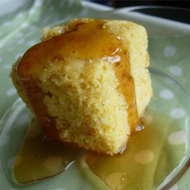

Golden Sweet cornbread

tasty golden sweet cornbread recipe
1 cup all-purpose flour
1 cup yellow cornmeal
2/3 cup white sugar
1 teaspoon salt
3 1/2 teaspoons baking powder
1 egg
1 Cup milk
1/3 cup vegetable oil
Steps
Preheat oven to 400 degrees F (200 degrees C).Spray or lightly grease a 9 inch round cake pan.
in a large bowl,combine flour,cornmeal,sugar,salt and baking powder. Stir in egg,milk and vegetable oil until well combined.pour batter into prepared pan.
Bake in preheated oven for 20 to 25 minutes,or until a toothpick inserted into the center of the loaf comes out clean
Nutrition Facts
Per Serving: 189 calories;protein 3.1g; carbohydrates 28.2g;fat 7.4g; cholesterol 17.1mg; sodium 353.9mg.